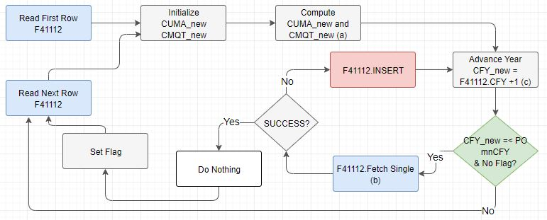

This document is a case study only for the EnterpriseOne user with huge rows from F4111 (Item Ledger File). The manipulation of data using query tool has to be your last resort because it is not the scope of Oracle Global Support.
Supposing that the row count for the tables related read as belsow,
| Row Count | Others | |
| F4111 (Item Ledger File) |
ilipcd Row Count |
Currently there is no standard method to archive/purge F4111 though the records with IPCD in ('X', 'Y') may not affect inventory cost. Some customer may implement partitioning but this is not Oracle's support scope. sql> select ilipcd, count (*) from proddta.f4111 group by ilipcd; |
| F41112 (Item ASOF Flie) |
Zeros bucket 229,414,921 ----------------------- 247,049,983 |
|
| F41021 (Item Location Flie) |
Zero bucket 7,989,879 --------------------------- 10,041,436 |
|
| F4105 (Item Cost File) |
21,428,554 | There is no means to check whether a certain row is a historical datum or not. Refer suggestion below. |
Note that the figure in above tables is case study only which does not imply actual data in real organization.
Question 1> Why R41548 keeps writing data into F41112 even when the values of all amount and quantity buckets are zero?
Question 2> How R41548 works?
Question 3> How to overcome the issue may be caused by the volume of data?
Through this document is to answer some technical questions on As Of Updating (R41548) report. Refer to <Document 625402.1> - E1: 41: As Of Processing (P4111 / P41112 / R41760 / R41540 / R41542) which you may use for Month-End Closing and Year End Closing process.
Answer 1> Why R41548 keeps writing data into F41112 even when the values of all amount and quantity buckets are zero?
Currently, R41548 inserts records into F41112 regardless the accumulated values are zero. So the number of records from F41112 increases 2 times whenever you run R41548 for your year-end closing. For this example, the total number of records from F41112 for this case study will be equal to or greater than 494,099,966 [= {247,049,983 + newly added rows of F41021) * 2}].
Not to have this issue, refer to <Document 625402.1> - E1: 41: As Of Processing (P4111 / P41112 / R41760 / R41540 / R41542).
Excerpt:
Important: When using report R41542 for a complete regeneration, all existing records from table F41112 will be purged regardless of the data selection. The data selection will be used only to regenerate the new records into table F41112. It is recommended that the complete regeneration is run once for the first fiscal year with inventory activity (with F4111 records) for all items. R41542 should run in batches, with data selection over separate fiscal years. This will ensure that balance forwards will be restored for each fiscal year.
Updating Balance Forward Records for Inactivity in the Fiscal Year
To include records of prior year activity, run the As Of Updating (R41548) UBE after the Item Ledger As Of Record Generation (R41542) program.
Problem: you may not run R41542 with complete regeneration when the data volume of F4111 is huge as given example. Hence, there is no way to purge F41112.
Answer 2> Detail routines is depicted as below,

In this figure,
a CUMA_New = F41112.CUMA + AN01 + AN02 + … + AN12 + AN13 + AN14
CMQT_New = F4112.CMQT + NQ01 + NQ02 + … + NQ13 + NQ14
b. Read F41112 on DCT, FY = FY_New, CTRY, ITM, MCU, LOCN, LOTN, and GLPT
c. CFY_New = ( F41112.CTRY*100 + F41112.FY ) + 1
Answer 3> Currently there is no viable option not to write F41112.
Try,
- Purge historic data using R4102P
Reference:
As explained above, there is no standard means to delete F41112 without running R41542. Hence,
1. Back up F41112
2. DELETE the rows with all quantity/amount buckets with zero using WHERE clause where ( incuma = 0 and inan01 = 0 and inan02 = 0 and inan03 = 0 and inan03 = 0 and inan04 = 0 and inan05 = 0 and inan06 = 0 and inan07 = 0 and inan08 = 0 and inan09 = 0 and inan10 = 0 and inan11= 0 and inan12 = 0 and inan13 = 0 and nan14 0 and incmqt = 0 and innq01 = 0 and innq02 = 0 and innq03 = 0 and innq04 = 0 and innq05 = 0 and innq06 = 0 and innq07 = 0 and innq08 = 0 and innq09 = 0 and innq10 = 0 and innq11 = 0 and innq12 = 0 and innq13 = 0 and innq14 = 0 );
Refer to <Document 1082128.1> - E1: ENV: Archive and Purging within JD Edwards EnterpriseOne, which may give you all available archive and purge options in EnterpriseOne.
<Internal_Only>
Query used for the collection of row count,
sql> select ilipcd, count (*) from proddta.f4111 group by ilipcd;
sql> select count (*) from proddta.f41112;
sql> select count (*) from proddta.f41112
where ( incuma = 0 and inan01 = 0 and inan02 = 0 and inan03 = 0 and inan03 = 0 and inan04 = 0 and inan05 = 0 and inan06 = 0 and inan07 = 0 and inan08 = 0 and inan09 = 0 and inan10 = 0 and inan11= 0 and inan12 = 0 and inan13 = 0 and inan14 = 0 and incmqt = 0 and innq01 = 0 and innq02 = 0 and innq03 = 0 and innq04 = 0 and innq05 = 0 and innq06 = 0 and innq07 = 0 and innq08 = 0 and innq09 = 0 and innq10 = 0 and innq11 = 0 and innq12 = 0 and innq13 = 0 and innq14 = 0 );
sql> select count (*) from proddta.f41021;
sql> SELECT COUNT (*) FROM PRODDTA.F41021
WHERE ( LIPBIN <> 'P' AND LIPQOH = 0 AND LIPBCK = 0 AND LIPREQ = 0 AND LIQWBO = 0 AND LIOT1P = 0 AND LIOT2P = 0 AND LIOT1A = 0 AND LIHCOM = 0 AND LIPCOM = 0 AND LIFCOM = 0 AND LIFUN1 = 0 AND LIQOWO = 0 AND LIQTTR = 0 AND LIQTIN = 0 AND LIQONL = 0 AND LIQTRI = 0 AND LIQTRO = 0 AND LIQTY1 = 0 AND LIQTY2 = 0 AND LIQTO1 = 0 AND LIQTO2 = 0 AND LIHCMS = 0 AND LIPJCM = 0 AND LIPJDM = 0 AND LISCMS = 0 AND LISIBW = 0 AND LISOBW = 0 AND LISQOH = 0 AND LISQWO = 0 AND LISREQ = 0 AND LISWHC = 0 AND LISWSC = 0 );
sql> select count (*) from proddta.f4105;
</Internal_Only>
Do not delete F41021 using query tool because which leaves huge number of rows from Item Cost, Item Cost Detail, and Lot Master Files.
It is always recommended to archive (when it is applicable) and purge the historic data.